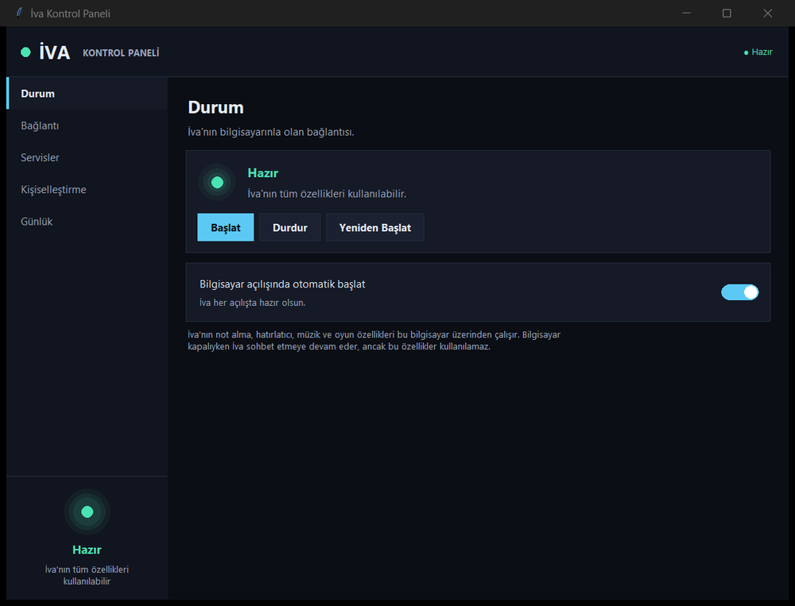

Tamamen Türkçe konuşan bir masaüstü asistanı. Not alır, hatırlatır, yönlendirir — klavyeye dokunmadan, ekrana basmadan. Masanda, kliniğin danışmasında ya da AVM'nin ortasında.
Notlar dağılıyor, tarihler unutuluyor, danışmadaki kuyruk uzuyor. İva bunların hepsine tek bir yerden, konuşarak cevap veriyor.
Toplantı, ders, fikir… söyle, İva yazsın. Elin serbest, aklın konuşmada kalsın.
Ödevler, sınavlar, teslim tarihleri ve yapılacaklar; hepsini kaydeder, takip eder.
Bildirim ve hatırlatmalarla hiçbir teslim tarihini ya da randevuyu kaçırma.
Çalışma seanslarını başlatır, molalarını hatırlatır, verimini korur.
İngilizce ve Çince konuşma pratiği, anında çeviri — masanda bir dil partneri.
Dilersen tüm veri kendi bilgisayarında çalışır; buluta hiçbir şey gitmez.
Uyandırma kelimesi senin seçimin — "İva" yerine istediğin ismi birkaç tıkla ata.
Görme zorluğu yaşayan, yaşlı ya da eli dolu olan herkes aynı şekilde kullanabilir.
ESP32-S3 tabanlı, üzerinde çalışılabilir bir mimari. Kapalı kutu değil.
Modeli sürükleyerek çevir, yakınlaştır. "Parçalar" görünümüne geçip kutunun içinde ne olduğunu tek tek incele.
Bir kategori seç, İva'ya nasıl seslenebileceğini gör.
Masa başından hastane danışmasına kadar, on somut an.
Hoca hızlı anlatıyor, yazmaya çalışırken yarısını kaçırıyorsun. İva dinlediklerini yazıya döküyor, sen sadece takip ediyorsun.
Toplantı biter bitmez kararları ve kimin ne yapacağını sesle kaydediyorsun. Bilgisayarı açıp not tutmaya gerek kalmıyor.
Ödev, vize, proje… hepsini söylediğin anda takvimine giriyor. Zamanı gelince masandan sesli olarak hatırlatıyor.
Telefonu eline almadan Pomodoro başlatıyorsun. İva süreyi tutuyor, molayı hatırlatıyor, gün sonunda kaç seans yaptığını söylüyor.
Karşında biri olmadan İngilizce konuşmak zor. İva sohbet ediyor, hatalarını düzeltiyor, yeni kelimeleri tekrar ettiriyor.
"Kardiyoloji hangi katta?", "Kan alma nereye?" gibi sorular gün boyu yüzlerce kez soruluyor. İva bunları karşılıyor, personel asıl işine dönüyor.
Hastane ortamında ortak dokunulan yüzey istemezsin. İva'ya hiç dokunmadan randevu saatini, sıra durumunu veya hazırlık talimatını sorabilirsin.
Dokunmatik kiosk ekranında menüde kaybolmak yerine mağazanın adını söylüyorsun. İva kat, yön ve en yakın yürüyen merdiveni tarif ediyor.
Bugünkü indirimler, etkinlik saatleri, otopark ücreti gibi sorular anında cevaplanıyor. Bilgi değiştiğinde tek yerden güncelleniyor.
Görme zorluğu yaşayan, yaşı ilerlemiş ya da küçük yazıları okuyamayan biri için sesli etkileşim en doğal arayüz. Ekrana bakmak gerekmiyor.
Büyük ekranlı yönlendirme kiosk'ları pahalı, yer kaplıyor ve herkes aynı yüzeye dokunuyor. Aynı işi konuşarak yapmak çoğu senaryoda daha hızlı, daha hijyenik ve daha erişilebilir.
Bağlantı durumu, anahtarlar ve kişiselleştirme; dosya düzenlemeden, tek pencereden yönetiliyor.

Şu an prototip geliştirme ve saha testi aşamasındayız. Paketler, fiyatlar ve teslim koşulları ürün hazır olduğunda burada yayınlanacak. Erken haberdar olmak ya da kurumsal pilot uygulama için bize yazabilirsin.
Endüstriyel tasarım, donanım seçimi ve Türkçe sesli etkileşim akışı.
Çalışan prototip, masaüstü uygulaması ve gerçek ortamda kullanım denemeleri.
Kurumsal pilot uygulamalar, üretim planı ve fiyatlandırmanın açıklanması.
Hayır. İva şu anda geliştirme aşamasında bir prototip; satışa çıkmadı ve ön sipariş almıyoruz. Hazır olduğunda paketler ve fiyatlar bu sayfada yayınlanacak.
Kesin bir tarih vermiyoruz, çünkü henüz saha testi aşamasındayız. Gerçekçi bir takvim oluştuğunda ilk olarak bültene kayıtlı kişilere haber vereceğiz.
Evet, baştan sona Türkçe: hem seni anlar hem de doğal Türkçe yanıt verir. Uyandırma kelimesini de istediğin gibi değiştirebilirsin.
Mimari, tüm işlemin kendi bilgisayarında veya kurum içi bir sunucuda çalışmasına izin verecek şekilde tasarlanıyor. Bu modda notların ve konuşmaların buluta gitmez.
Evet, en çok ihtiyacımız olan şey bu. Hastane, poliklinik, AVM veya benzeri bir ortamda denemek isterseniz bize yazın; senaryoyu birlikte kurgulayalım.
Yönlendirme, sık sorulan sorular ve bilgilendirme gibi senaryolarda evet. İmza, ödeme veya belge yazdırma gibi fiziksel çıktı gerektiren işlemler için kiosk hâlâ gerekli — İva bu senaryolarda kiosk'un yükünü hafifletir.
Prototip ESP32-S3 tabanlı bir kart, mikrofon dizisi, hoparlör ve 1.3" OLED ekran üzerine kurulu. "Tasarım" bölümündeki 3B modelden parçaları inceleyebilirsin.